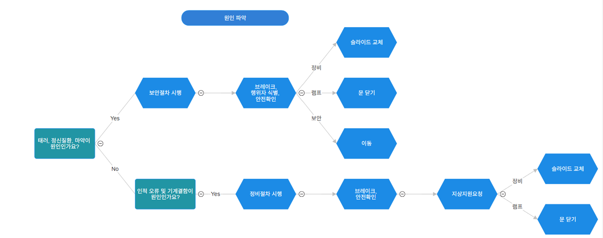
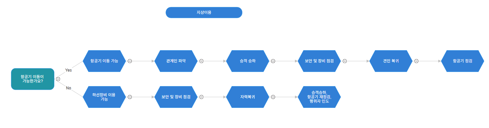

프로토콜 교육
저희가 만든 프로토콜은 항공기의 비상문 개방 시 항공기별 개방위치, 개방원인에 따라 어떠한 절차가 이뤄져야 하는지를 다루고 있습니다.
항공종사자가 아닌 이상 단기간의 내용 파악이 어려움을 인지하고, 프로토콜의 의의에 초점을 두고 조사하므로 부담 갖지 않으셔도 됩니다.
프로토콜 내용이 방대하여 사진으로 최대한 간략하게 교육하고자 합니다.
프로토콜 흐름

이것은 전체 프로토콜의 흐름입니다.
DA/H 미만

'접근-DAH미만' 부분의 경우, 사진과 같이 세부적으로 절차가 나눠지며, 지상지원요청으로 절차가 마무리됩니다.
DA/H 이상

'접근-DAH이상' 부분의 경우, 안전고도인 1000ft를 기준으로 경우가 나눠지며, 사진과 같이 절차가 이뤄집니다.
원인파악
'원인파악' 부분의 경우, 정지-보안/정비 부분을 보시면 됩니다. 원인에 따라 사진과 같이 절차가 이뤄집니다.
지상이동
'지상이동' 부분의 경우, 상단의 '복귀'에 해당하는 부분을 보시면 됩니다. 항공기 이동 가능 여부에 따라 사진과 같이 절차가 이뤄집니다.
교육을 마친 후 '다음' 버튼을 눌러주세요.